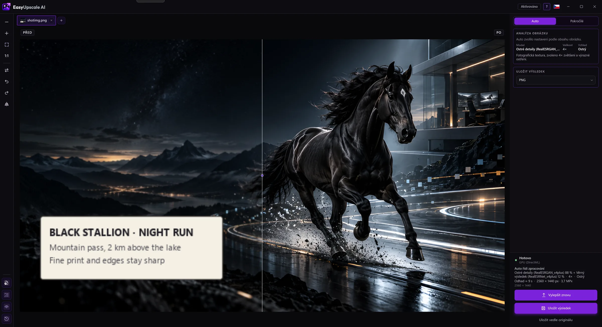

Čitelný text na fotce
Štítek na produktu, cedule, strana dokumentu nebo screenshot po zvětšení často rozmaže písmena. EasyUpscale AI má vlastní textový model, natrénovaný od nuly na písmena, štítky a dokumenty.

Stáhnout zdarma pro Windows · Koupit licenci · 8,99 €
Jak se text zvětšuje
- Stránka textu. Automatický režim pozná obrázek, který je opravdu text (světlý papír, tenký tmavý inkoust v řádcích), a použije textový model.
- Text ve fotce. U obyčejné fotky Auto najde části s textem (štítek, cedule, papír na stole) a zvětší právě je textovým modelem. Zbytek jde přes model pro fotky a okraje se měkce prolnou.
- Ruční výběr. V Pokročilém režimu (s licencí) můžete textový model vybrat pro celý obrázek.
Upřímně
- Kontrola, co je text, je záměrně přísná: najde zhruba tři čtvrtiny štítku a ve fotkách bez textu nic. Přehlédnuté slovo se zvětší modelem pro fotky.
- Model zvětšuje, nečte (není to OCR). Hodně rozmazaný text zůstane nečitelný.
- Model je trénovaný jen na datech, která lze komerčně použít (viz O projektu).